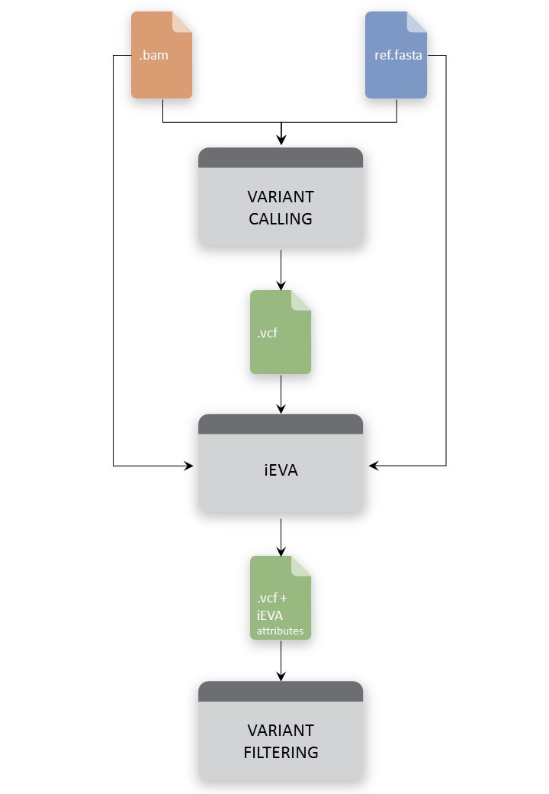

Introduction¶
iEVA is a python command line tool that expands the number of informative attributes that are not commonly provided by variant callers. It needs as input a .vcf file from variant calling and generates as output a new vcf file enriched with all extracted information.
iEVA attributes are annotated in INFO and FORMAT field of vcf output file (see https://samtools.github.io/hts-specs/VCFv4.2.pdf for vcf specification). iEVA extracts information for variant in input vcf file from two different sources:
- Reference.fasta file. Nucleotide sequence composition around a called variant is extracted from the fasta reference file. The annotations are reported in vcf INFO field.
- BAM file. Information about reads mapping variant position, for sample in vcf input file, is extracted from bam file. The annotations are reported in vcf FORMAT field.
iEVA enriches vcf file with several attributes. With iEVA you can:
- Report the reference sequence quality in terms of G-C content, repeated sequences, pseudo nucleotide composition and more over.
- Report genotype information for samples in vcf file. You can extract, for each sample, useful information like fraction of unmapped reads, not paired reads, duplicate reads, etc…
- Report allele-specific information, by evaluating, for example, number of reads supporting reference or alternate allele given a specific mapping quality or base quality threshold. These attributes help to identify any bias affecting called variants.
Main advatages of iEVA are:
- Output file in a vcf format file. iEVA simply adds the extracted attributes, maintaining original tags in input vcf file.
- Extraction is independent of the variant caller used in variant calling analysis. To a proper usage of iEVA look at Usage and Prerequisites.
- iEVA is not a variant caller, for this reason is a safe-time approach. However, its computational time increases depending both on the number of requested sample for extraction, target length and mean target coverage.
See iEVA arguments for details about iEVA options and Tutorial and examples section.
One of the strengths of iEVA consists in its simplicity of integration in bioinformatics pipeline, as showed in this figure:
{kind=link}